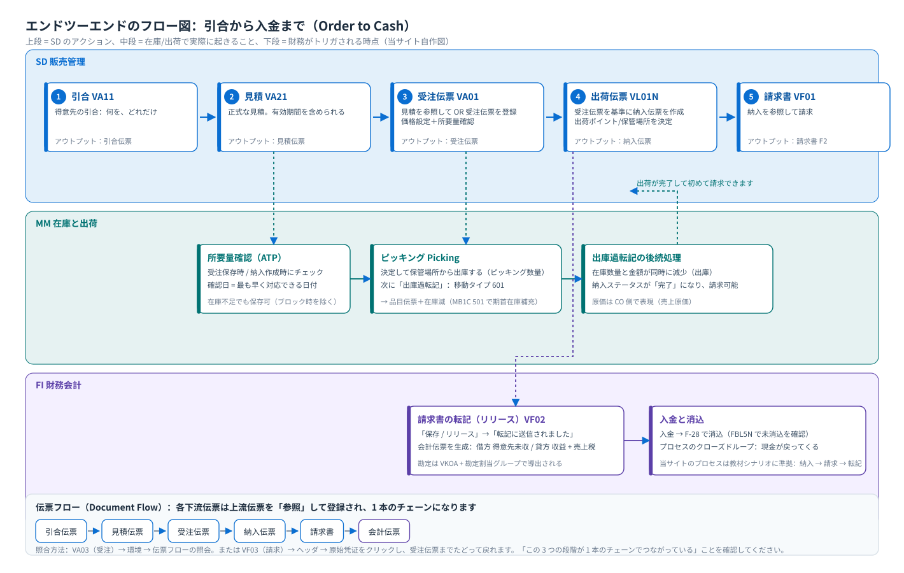

エンドツーエンドのプロセス：引合から入金まで
Order to Cash · フロー図 · 伝票フロー · 統合ポイント · ステータス
1. 全体フロー図
{kind=link}

図を読む際の要点
- 横軸は時間で、矢印の向きがそのまま順序です：まず受注があり、次に納入、納入があって初めて請求できます。
- 縦軸は責任です：同じ事象が 3 つのモジュールにまたがることがあります（例えば「出荷」は SD では納入伝票、MM では品目伝票、FI では原価です）。
- 点線は「同一の伝票」ではなく「トリガ」です：納入を登録すると出荷準備がトリガされ、出庫過転記が在庫変化をトリガします。
2. 6 つの段階：誰が行い、何を入力し、何を生み出すか
| 段階 | 誰が行うか | 入力 / 前提条件 | システムが行うこと | アウトプット | T-code |
|---|---|---|---|---|---|
| ① 引合 | 販売 | 得意先 + 品目 + 数量 | 拘束力のない引合伝票を作成 | 引合伝票（IN） | VA11 |
| ② 見積 | 販売 | 引合を参照するか、直接新規登録 | 価格と有効期間を示す | 見積伝票（QT） | VA21 |
| ③ 受注伝票 | 販売 / カスタマサービス | 得意先に販売ビュー、品目に販売ビュー、条件レコード、在庫または欠品許容がある | 明細カテゴリ、価格設定、税、パートナ、所要量確認、納入日を決定 | 受注伝票（OR） | VA01 |
| ④ 出荷伝票 | 出荷／倉庫管理 | 受注伝票が存在し、明細行が納入を許可している | 出荷ポイント、ピッキング保管場所、納入日を決定 | 納入伝票（LF） | VL01N |
| ⑤ ピッキング + 出庫過転記 | 倉庫担当 | 納入伝票が存在し、在庫が十分 | ピッキングで数量を確認。出庫過転記（移動タイプ 601）で実際に出庫します | 品目伝票 + 納入ステータス「完了」 | VL02N |
| ⑥ 請求書 + 転記 | 請求 / 財務 | 納入完了、請求関連の設定が準備済み | 納入を基準に請求し、税を計算し、転記して会計伝票を生成 | 請求書（F2）＋会計伝票 | VF01 / VF02 |
最も多い誤解：「伝票を保存」すれば終わりだと思うこと受注伝票はあくまで約束です。実際に商品を出荷し、代金を計上するのは、後続の納入と請求書です。したがって業務から「この伝票はいつ入荷するか」と聞かれたときに見るのは納入日と確認数量であり、受注伝票上の「要求納入日」ではありません。
3. 3 つの統合ポイント（面接・試験でよく聞かれる）
| 統合ポイント | SD 側で行ったこと | 隣接モジュールで何が起きるか | どう検証するか |
|---|---|---|---|
| 所要量伝達（SD → PP） | 受注伝票が保存され、明細行に所要量タイプ/所要量カテゴリが付く | MRP（MD04）にその品目の所要量が表示される | MD04 に品目を入力して「受注伝票」行を確認 |
| 所要量確認（SD ⇄ MM） | 受注伝票の保存時/納入伝票の作成時に在庫をチェックする | 在庫、購買の入荷予定、生産指図を合わせて考慮し、確認日を提示する | 受注明細行 → 確認タブ；MD04；CO09 可用性概要 |
| 出庫過転記と記帳（SD → MM／FI） | VL02N で出庫過転記をクリック | MM が品目伝票を生成し在庫が減少；FI/CO に出庫原価が現れます | MB51（品目伝票）、VL03N（納入ステータス）、MB52（在庫） |
| 請求記帳（SD → FI） | VF02 請求書をリリース | FI が会計伝票を生成：得意先売掛金の借方 / 収益 + 売上税の貸方 | VF03 → 環境 → 会計伝票；FB03；FBL5N |
4. ステータス：この伝票がどこまで進んだかを知る方法
どの伝票にもステータス項目のセットがあります。ステータスを見れば「なぜ請求できないのか」が判断できます。よく使うステータス：
| ステータス | どの伝票で | 意味 | 影響 |
|---|---|---|---|
| 全体ステータス Overall Status | 受注伝票 / 納入 / 請求書 | 伝票全体の処理進捗 | 伝票が完了したかを判断 |
| 拒否理由 Rejection Reason | 受注明細行 | この行は省略します | この行は納入/請求の対象にならない |
| 納入ステータス Delivery Status | 受注明細行 | 未納入 / 部分納入 / 完全納入 | 請求できるか、あとどれだけ納入できるかを決定 |
| 出庫ステータス Goods Issue Status | 納入伝票 | 出庫過転記（PGI）が完了しているか | 出荷していないと請求できません |
| 請求ステータス Billing Status | 受注明細行 / 納入 | 未請求 / 部分請求 / 完全請求 | 後続でいくらまで請求できるかを決定 |
| ピッキングステータス Picking Status | 納入伝票 | 未ピッキング / 部分 / 完全 | 倉庫の作業進捗を表示 |
現場で最も手早い質問の仕方
VA03 で受注伝票を開く → ヘッダ/明細の両方にステータスタブがあります；または「環境 → 伝票フローの照会」を使います。1 つの伝票からどの下流伝票（納入？請求書？）が生成済みか、それぞれのステータスが一目でわかります。本プロジェクトの 分析ページ には実際の画面があります。5. 順序は崩せない：実際に遭遇する 3 つのエラー
- 「システムが可用在庫なしと表示」（教材タスク 41 のステップ 4 の画面）：受注伝票の数量が可用在庫を上回っています。システムメッセージは出ますが続行できます（阻止するように設定されていない限り）。教材が示す解決パスは
MB1C移動タイプ 501 伝票参照なしの入庫期首在庫を入力し、後続の納入が流れるようにします。 - 納入を登録できない：受注明細が納入を許可していない（明細カテゴリで納入関連が未チェック？明細が拒否済み？完納済み？）、または利用可能在庫/出荷ポイントがない。
VL01Nの「不完全ログ」でシステムメッセージを確認します。 - 請求できない：納入で出庫過転記をしていない、または請求関連の設定が欠けている（請求書タイプ、請求書日付、勘定設定）。
VF01には「請求可能な納入」が一覧表示されます。一覧が空なら、上流が完了していません。
6. セルフチェック：このフロー図を何も見ずに描けるか
授業でのチェック（上の表を見ずに口頭で回答）
- 5 つの伝票の順序は？それぞれどの T-code で登録しますか？
- どのステップで実際に在庫が減りますか？移動タイプはいくつですか？
- どのステップで会計伝票が生成されますか？借方と貸方はそれぞれ何ですか？
- 得意先から「なぜ自分の請求書がまだ発行されないのか」と聞かれたら、どの 3 つのステータスを確認しますか？
- 受注伝票の保存時に在庫不足が表示された場合、業務は続けられますか？その後どう解決しますか？